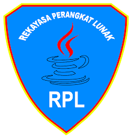

SMK PGRI 31 JAKARTA
jl.musi no 44,cideng -jakarta pusat
TRANSTRIP NILAI
TAHUN PELAJARAN 2022 / 2023
(Kutipan Dari Induk Siswa)
| Nama siswa |
: |
RATU SYIFA
|
TTL |
: |
jakarta ,14-06-2006 |
| NO.Induk |
: |
1482006 |
| NO.Induk Siswa Nasional |
: |
10387 |
| Kompetensi keahlian |
: |
REKAYASA PERANGKAT LUNAK |
| Nomor |
Mata pelajaran |
Nilai |
Grade |
| 1 |
pendidikan agama |
90 |
A |
| 2 |
bahasa indonesia |
90 |
A |
| 3 |
bahasa inggris |
90 |
A |
| 4 |
sejarah indonesia |
90 |
A |
| 5 |
pendidikan pancasila |
90 |
A |
| 6 |
pemograman dasar |
90 |
A |
| 7 |
dasar dasar design grafis |
90 |
A |
| 8 |
logika algoritma |
90 |
A |
| 9 |
etika profesi |
90 |
A |
| 10 |
basis data |
90 |
A |
jakarta,23 agustus 2022
kepala sekolah
Dra. Mulyanti
|